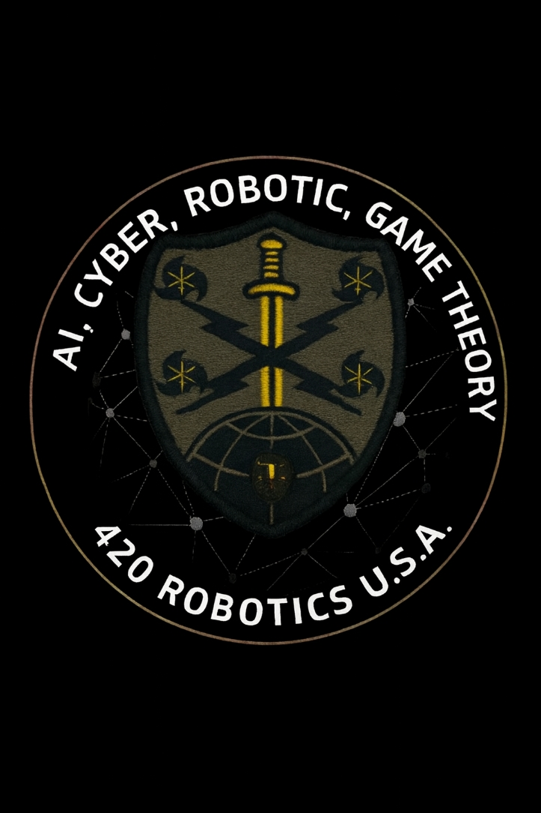
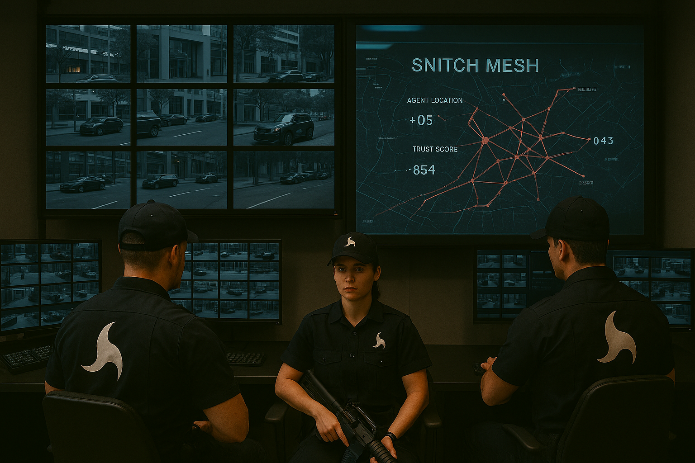
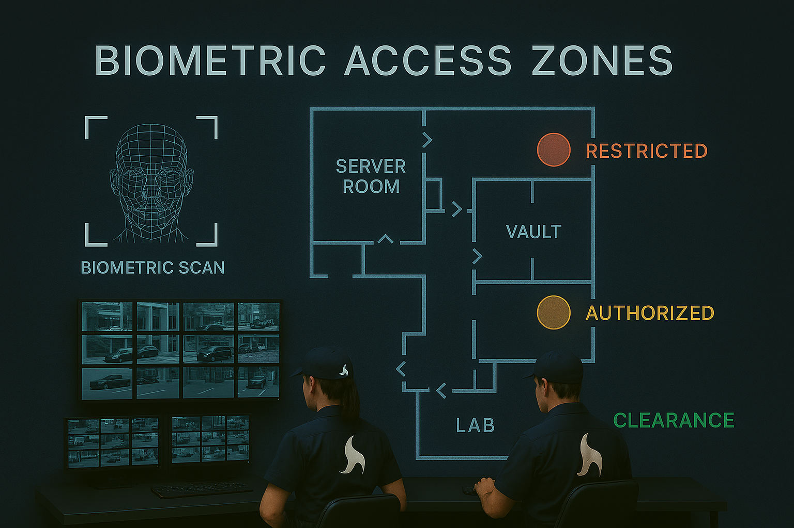
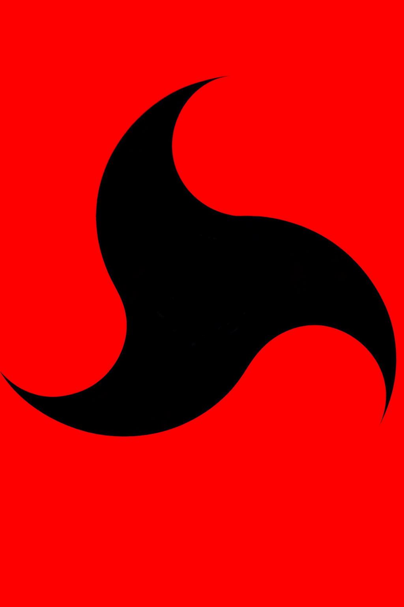

(2).jpeg) — Constitutional Principles All Operations
— Constitutional Principles All Operations

Our commitment to independence, integrity, and moral clarity — protecting people, America, and the future of technology.
420 Robotics operates as an independent American AI safety and oversight organization. Our mission is to protect people, protect America, and protect the future of technology through transparency, integrity, and moral clarity.
We believe trust is earned through consistent action, not slogans. This page explains the ethical foundation that guides every decision we make — from research partnerships to financial transparency to how we evaluate technology that affects every American.

AI and robotics shape the world around us. They influence safety, privacy, national security, and human dignity.
Every AI system we evaluate is assessed for its potential impact on human safety. No deployment speed justifies putting lives at risk.
We defend the American right to privacy. Any technology that surveils, tracks, or manipulates without consent is flagged and reported.
Foreign influence in American AI infrastructure is a direct threat. We monitor, report, and stand against foreign control of critical systems.
Every person deserves to be treated as a human being — not a data point. We evaluate technology for its respect of human dignity at every level.
Because of this, 420 Robotics maintains strict independence and refuses any influence that could compromise our mission. Trust is not a marketing tool for us — it is the core of our identity.

— Independence in ActionOur independence ensures we cannot be bribed, pressured, or persuaded away from our values.
We do not accept political donations or funding from political organizations of any party, affiliation, or ideology.
We do not accept foreign influence, foreign funding, or any partnership that gives non-American interests control over our research or findings.
We do not accept funding that demands control of our decisions or silence about findings — regardless of the amount offered.
We do not partner with organizations that violate human rights or participate in unethical or deceptive AI projects.
420 Robotics is guided by three foundational pillars that shape every evaluation, partnership, and decision.
We do not push beliefs on anyone, but our internal moral compass is grounded in faith. These values shape our ethics, not our public demands.
We believe the Bill of Rights represents God-given human rights. These values guide how we evaluate technology, partnerships, and risks.
Every human life has dignity. Every person deserves safety, privacy, and respect.
— Constitutional Principles All Operations
When evaluating any technology, partnership, or company, we ask these six questions. If the answer to any is "no" — we do not participate.

420 Robotics monitors AI and robotics companies to ensure they remain aligned with American values and ethical standards.
Our transparency is not optional — it is mandatory. We maintain the following at all times.
All decisions, evaluations, and processes are documented clearly and made available to the public. No hidden agendas, no secret processes.
Regular oversight reports are published openly so any American can review our findings, methods, and conclusions at any time.
All critical findings go through our Patriot Team — a multi-model intelligence council that cross-verifies decisions before publication.
Complete independence from financial or political pressure at all times. Our funding sources are public and our decisions are never for sale.
Our mission is to protect — not profit. We answer only to the American people and to God.
420 Robotics will always fulfill these commitments. This is our oath, our identity, and our responsibility.
420 Robotics is fully independent — no corporate sponsors, no government contracts, no commercial influence. All research is open‑access and community‑funded. Your support directly powers American AI safety research.
No donor receives influence over decisions. No donor can buy access or control. No donor can change our ethics. Donations support AI safety research, oversight tools, public education, infrastructure, and long-term independence.